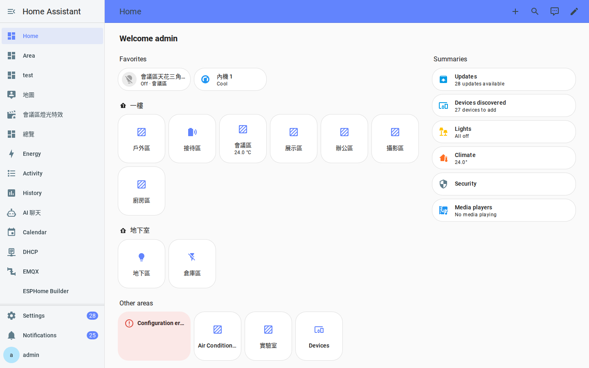
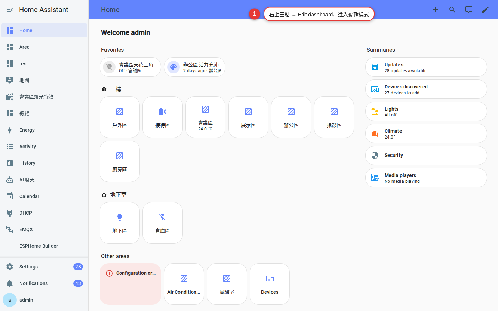
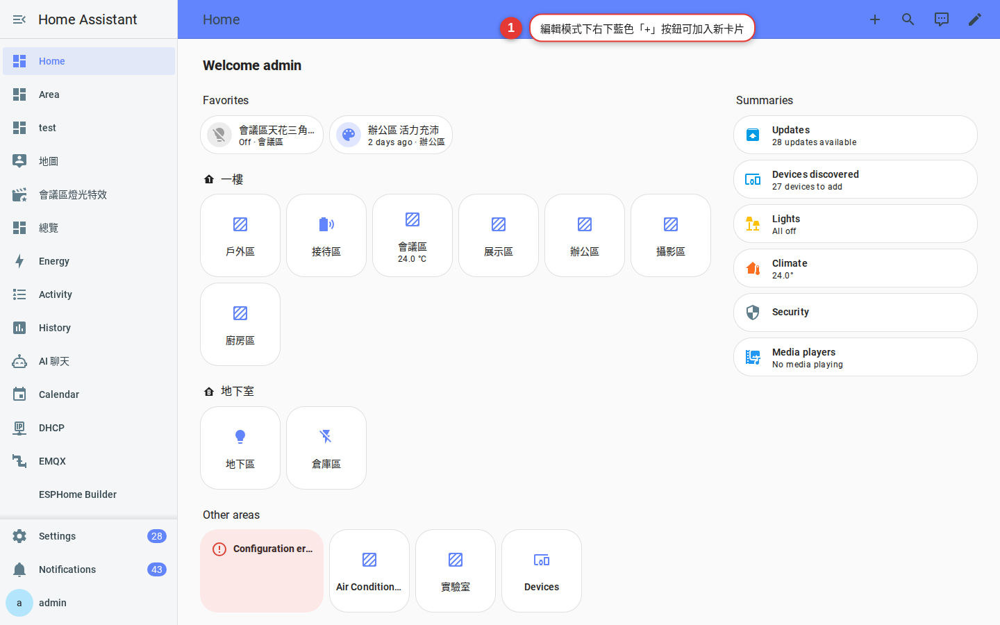
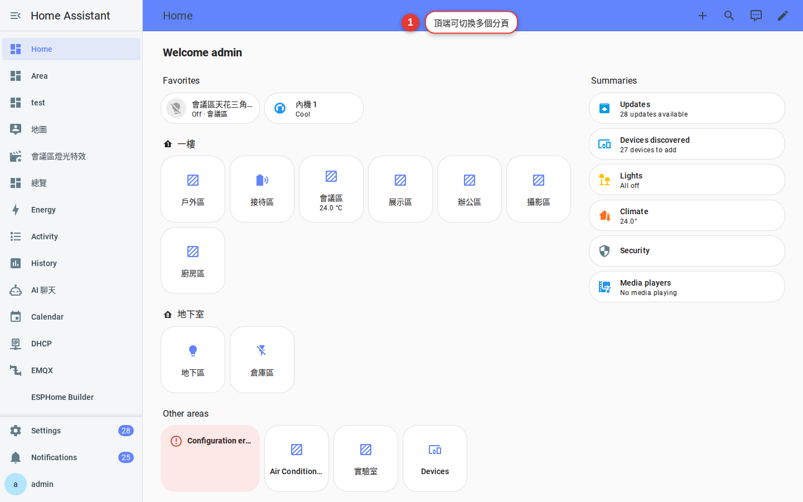

第 6 章
儀表板
把家人最常用的燈、窗簾、冷氣拉到「一打開就看到」的位置。做完之後，全家人不用學就會用。
為什麼要自己排版
HA 預設會自動生成一個「總覽」儀表板，包含所有設備 — 這對「認識家裡有什麼」很好，但對「日常操作」爆炸多。
你要的是一個「早上打開、按 3 下就搞定所有事」的畫面。要達到這個目標，得做兩件事：
- 刪不常用的卡片。
- 排常用的到最上面。
現況：預設儀表板
登入後看到的第一頁就是預設儀表板。它會自動：
- 每個區域一張卡片。
- 裡面塞該區域所有實體。
- 順序按 HA 內部排序，沒什麼章法。

排出你自己的「首頁」
-
右上角三個點 → 「編輯儀表板」
進入編輯模式，每張卡片右上角會出現筆刷圖示。

圖 6-2編輯模式的入口。 -
刪掉不需要的區域卡片
點卡片的筆刷 → 垃圾桶 → 確認刪除。
刪除的是「卡片」不是「設備」— 設備還在，只是這張卡片不顯示。 -
加入「常用設備」卡片
右下角「＋ 新增卡片」→ 選「實體」或「按鈕」卡片 → 選你要的實體（例如客廳主燈）→ 儲存。

圖 6-3新增卡片 — 內建近 30 種卡片類型。 -
推薦的「首頁」卡片組合
- 天氣（Weather 卡片）— 判斷今天要不要帶傘、開除濕。
- 「誰在家」（Person 卡片）— 一眼看誰在誰不在。
- 常用場景按鈕（Button 卡片）— 例如「回家」「離家」「睡覺」。
- 各區域全開／全關（Button 卡片打服務）— 一鍵開關一樓所有燈。
-
拖曳排序
按住卡片拖到想要的位置。最常用的放最上面。
-
右上角「完成」離開編輯模式
沒按完成，設定不會存！
多分頁與檢視
一個儀表板可以有多個分頁（View）：
- 首頁：常用操作。
- 各樓層：一樓、二樓分頁，每頁詳細。
- 能源：用電、太陽能。
- 安防：監視器、門鎖、感應器。
編輯模式右上角「＋」新增分頁。每個分頁可以獨立設「哪些使用者可看」。

3 個排版小訣竅
訣竅 1：用 Section 分組。新版 HA 有「Section」檢視類型，可以把「照明」「冷氣」「窗簾」用區塊分開，比長長一整條清楚。
訣竅 2：手機版另外排。編輯模式右上角有「檢視 → 桌面／手機」預覽，可以看到手機版長什麼樣。手機版建議一欄式、少 3-5 張卡片。
訣竅 3：善用「條件顯示」。卡片有「Visibility」設定，可以做到「只有下雨天才顯示除濕機卡」「訪客帳號看不到主臥燈」。
常見問題
不小心刪錯卡片能救嗎？
如果還沒離開編輯模式，右上角「復原」；離開了就要重建。所以建議大改前先「三點選單 → 原始編輯器」把 YAML 複製到記事本備份。
能把儀表板整個複製一份給小孩用嗎？
可以。「設定 → 儀表板 → 新增儀表板」→ 從模板複製 → 指定給某使用者。這樣爸媽和小孩各有各的首頁。
想裝 HACS 上更漂亮的卡片可以嗎？
可以，例如 mushroom-cards、button-card 都很流行。但先用內建卡片走一遍，理解概念之後再裝，比較不會迷路。